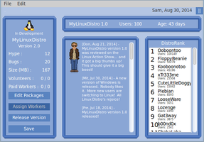

Linux Tycoon
Dieser Artikel wurde für die folgenden Ubuntu-Versionen getestet:
Ubuntu 16.04 Xenial Xerus
Zum Verständnis dieses Artikels sind folgende Seiten hilfreich:
|  |
| Spielszene |
Linux Tycoon  ist eine Wirtschaftssimulation, die von Bryan Lunduke in der proprietären Programmiersprache Xojo (ehemals REALbasic) entwickelt wurde. In dem Spiel geht es darum, eine eigene Linux-Distribution zu entwickeln. Mit dieser Idee ist es derzeit ein einzigartiger Vertreter im Genre. Optisch orientiert sich die Oberfläche an klassischen Pixel-Art-Grafiken. Den Spieler erwarten vielseitige Aufgaben eines Distributors:
ist eine Wirtschaftssimulation, die von Bryan Lunduke in der proprietären Programmiersprache Xojo (ehemals REALbasic) entwickelt wurde. In dem Spiel geht es darum, eine eigene Linux-Distribution zu entwickeln. Mit dieser Idee ist es derzeit ein einzigartiger Vertreter im Genre. Optisch orientiert sich die Oberfläche an klassischen Pixel-Art-Grafiken. Den Spieler erwarten vielseitige Aufgaben eines Distributors:
Auswahl und Pflege der Software-Pakete für die Distribution
Beheben von Fehlern
Verwalten der Mitarbeiter
Optimieren der Gesamtgröße für die Veröffentlichung
Und vieles mehr!
Das Spiel steht als Demo-Version kostenlos zum Download. Der Funktionsumfang ist in dieser Version vollständig, aber die Anwenderzahl, die maßgeblich für das Ranking einer Distribution ist, wurde auf 100 beschränkt. Mit der ersten Veröffentlichung der Distribution zu Spielbeginn erscheint ein entsprechender Hinweis mit der Möglichkeit die Vollversion zu erwerben oder einen Lizenzschlüssel einzugeben.
Der Quelltext steht unter der freien Lizenz GPLv2 und ist ebenso frei zugänglich unter Linux-Tycoon. Für die verwendete Programmiersprache gibt es aber nur einen kommerziell vertriebenen Compiler für 32-Bit-Linux.
Installation¶
Vorbereitung¶
Nutzer eines 64-Bit-Systems müssen im Vorfeld die folgenden Pakete installieren [2]:
libgtk2.0-0:i386
libcanberra-gtk3-module:i386
 mit apturl
mit apturl
Paketliste zum Kopieren:
sudo apt-get install libgtk2.0-0:i386 libcanberra-gtk3-module:i386
sudo aptitude install libgtk2.0-0:i386 libcanberra-gtk3-module:i386
Durchführung¶
Von der archivierten Projektseite  kann das Spiel als vorkompilierte Binärdatei für 32-Bit-Systeme heruntergeladen werden. Anschließend muss das heruntergeladene Archiv entpackt [1] werden. Das Spiel selber kann man dann mit einem Doppelklick über die Datei LinuxTycoon im entpackten Verzeichnis starten [3].
kann das Spiel als vorkompilierte Binärdatei für 32-Bit-Systeme heruntergeladen werden. Anschließend muss das heruntergeladene Archiv entpackt [1] werden. Das Spiel selber kann man dann mit einem Doppelklick über die Datei LinuxTycoon im entpackten Verzeichnis starten [3].
Hinweis:
Eine Version für 64-Bit-Systeme ist leider nicht verfügbar, weil der Kompiler für die verwendete Programmiersprache nicht für 64-Bit übersetzen kann. Alternativ bleibt die Möglichkeit, die DOS-Version des Spiels in DOSBox laufen zu lassen. Leider ist diese Version optisch weniger ansprechend.
Benutzung¶
Die Oberfläche des Spiels lässt sich unkompliziert mit Maus und Tastatur bedienen und ist weitestgehend selbsterklärend. Die einzelnen Schritte bis zur ersten Veröffentlichung einer eigenen Distribution werden zu Beginn eines Spiels erläutert. Speicherstände können in einem beliebigen Verzeichnis abgelegt werden.
Problembehebung¶
Unter Ubuntu 14.04 kann das Spiel nicht genutzt werden (siehe Diskussion).
- Erstellt mit Inyoka
-
 2004 – 2017 ubuntuusers.de • Einige Rechte vorbehalten
2004 – 2017 ubuntuusers.de • Einige Rechte vorbehalten
Lizenz • Kontakt • Datenschutz • Impressum • Serverstatus -
Serverhousing gespendet von